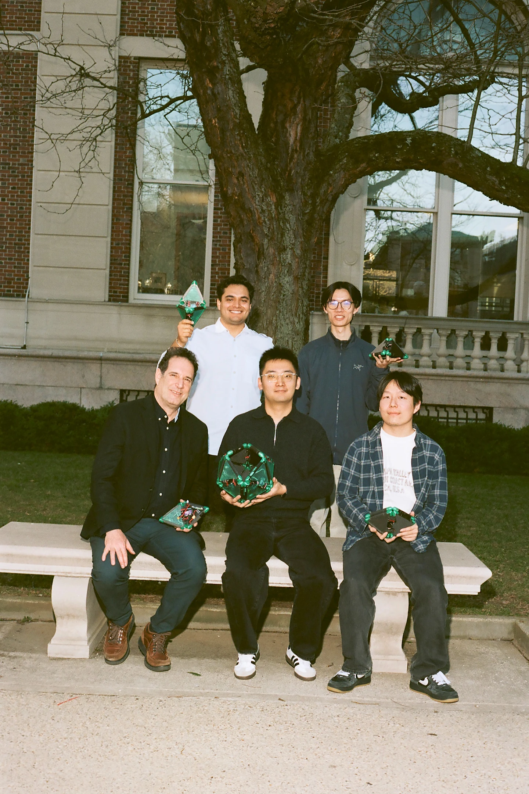
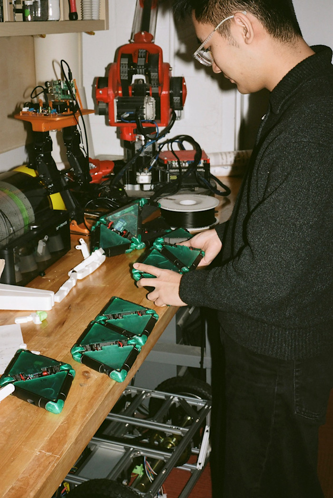
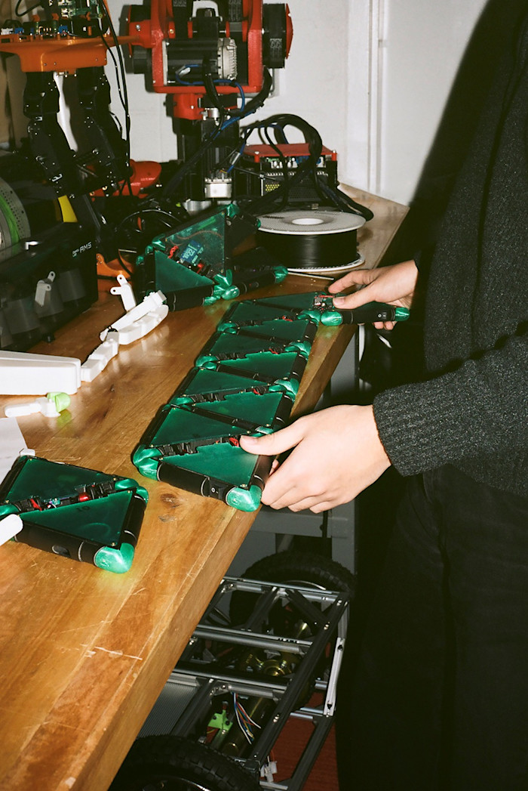
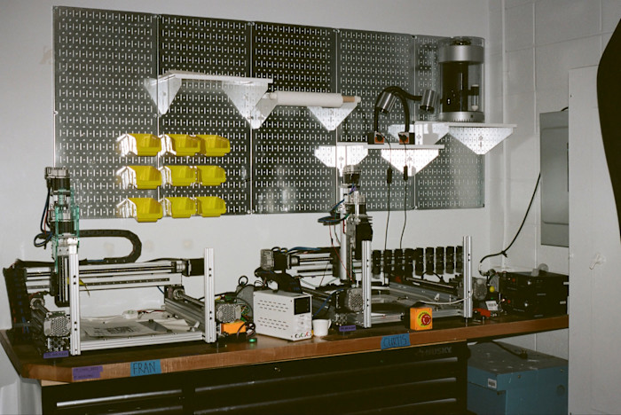
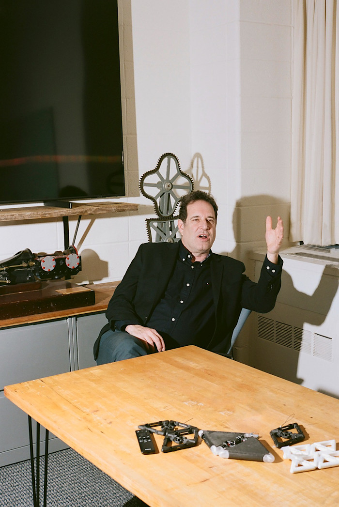
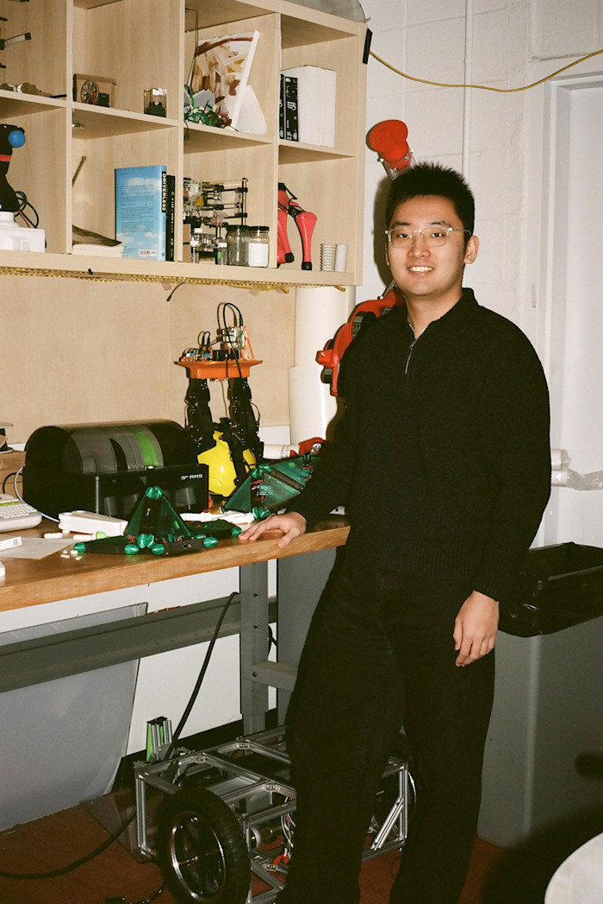
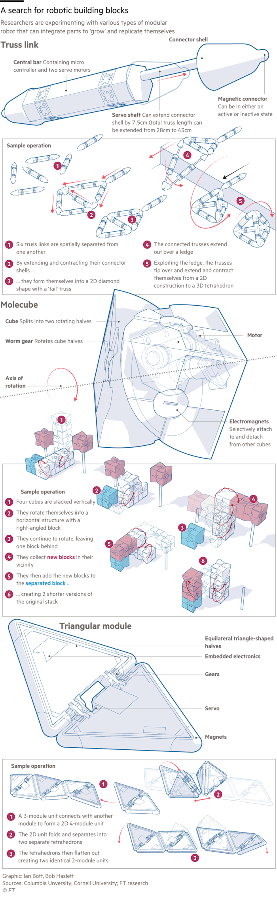
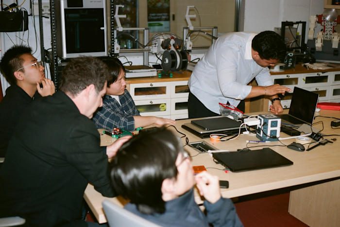

Financial Times · FT Magazine
Can we make robots that eat other robots?
For one group of dogged roboticists, artificial life that can reproduce itself is the future. The fact it doesn’t yet work only adds to the excitement
Read the original article on FT.com →

I. Omne vivum ex ovo
At the corner of 120th Street and Amsterdam Avenue in upper Manhattan, on the campus of Columbia University, stands a large but otherwise unremarkable building called Mudd Hall. Three storeys down, deep within its linoleum recesses, is a small laboratory. And in that laboratory is a desk affixed with a sign that reads “Robot Metabolism”. On shelves above the desk sit a collection of white plastic rods, the size and shape of sticks of dynamite.
On a painfully cold evening in January, two young men, Philippe Wyder and Judah Goldfeder, stood at this desk and took its inventory. They carefully examined the bone-white sticks. Inside each were two servo motors, a tiny chip, resistors, magnets and batteries. When these rods are set down, each can move in one dimension, extending and retracting, a bit like an inchworm. Many rods can attach, combine, assemble, assist, shed and replace. Robot, heal thyself.
A paper describing this system, on which Wyder and Goldfeder were co-authors, appeared in the journal Science Advances last summer. “We believe that this is the first demonstration of a robot system that can grow from single parts into a full three-dimensional robot, while systematically improving its own capability in the process and without requiring external machinery,” they declared.


Wyder picked up a rod; there was joy on his face. The rods — their formal name is truss links — were inspired by a Swiss construction toy he had played with as a child. This is not a robotics lab in a cinematic sense. There are no piles of arms or legs, no lifeless humanoids hanging from hooks. There are instead cubbyholes crammed with toys and geometric modules across dimensions — rods, triangles, cubes — that they hope will be the building blocks of future robotic life. A central dogma of Columbia’s Creative Machines Lab is that much robotics is fixed and monolithic. Theirs will be adaptable and self-sufficient. They will assume the features of biological life, if not the aesthetics. In the lab’s name, “creative” modifies the “machines”.
If their machines can eat, they can grow. If they grow they can reproduce, if they reproduce they can mutate, if they mutate they can evolve.
The exemplar project for the Creative Machines Lab, said Wyder, is “a machine that manufactures another machine, and that machine just walks right out”.
Sylvester Zhang, a master’s student, lingered nearby. Wyder recently completed his PhD with the rods and Zhang has inherited the Robot Metabolism desk. Zhang’s project, which uses triangles, is also inspired by a children’s toy. I asked about its purpose. “It’s to try to achieve the ability to self-reproduce,” said Zhang, who wears clear-frame glasses on his smooth, square face. “We want the system to attach to the other modules in the environment and to create the next generation.”
The young roboticists took seats in a dim corner of the room. They spoke with reverence about the lab’s director, a Columbia professor of mechanical engineering called Hod Lipson. Hod, rhymes with God. He is the reason they are all here. Lipson makes robots conscious. Lipson’s students make robots dance. “Everything starts from Hod, but it comes through me,” Zhang said.
In some ways, robots are the physical manifestation of artificial intelligence. AI as an academic discipline has learnt the “bitter lesson” that computational power always trumps domain-specific understanding. Corporations, not universities, have the power and the data and the money. Computer science faculties suffer the combined erosive effects of a presidential attack on education, university budget cuts and fat private-sector salaries.
“Everyone who was working in AI woke up one day like, ‘Holy shit, a private company just outdid us all,’” Wyder said. “Wouldn’t it be better, as a young person, to be part of the next great thing, versus late to the current great thing?”
“The reason why robotics doesn’t have that hype is because it doesn’t work yet,” Goldfeder said. “As a scientist, man, that’s fun, that’s exciting. I don’t want to work on a solved problem.”
So these ragtag roboticists persist. They wouldn’t be caught dead in a corporate lab, improving the effectiveness of some factory arm by half a per cent. They have more exalted ambitions. And they look with some superiority on the large language models that infest our screens. “An LLM has never seen the world,” Goldfeder said. “It might have read millions of descriptions of the physical world, billions, but it’s never seen the physical world.”
Wyder pulled two robots off a shelf and placed them on a table. They looked like flowers and touched each other at their petals. “If you have a cluster of these together, they will move towards the light,” he said. It was dark outside but Wyder looked instinctively out the window. “They don’t talk to each other. It’s an emergent behaviour, them moving as a collective towards the light.” Though no one told them to — all they do is expand and contract — these robots work together.
The Creative Machines Lab, filled with shapes and toys, is a breeze-block nursery in Morningside Heights. “Where did we come from?” Wyder said. “How did this all begin? How did this life start? And what would be the equivalent of the origin of life for robots? You could call us, you know, part of the driving force of that.”
II. It’s very spooky
Implicit in this work is the assumption that, one day soon, the world’s robot population will explode and that we are not prepared. If, as many are predicting, that number grows from millions into billions, where will we find the resources to build them? Who will take care of them? Where will they go when they die?
The creative machinists want to build robots that answer these questions themselves. Robots that “eat” and “heal” and “reproduce”, and what is reproduction but the ultimate form of self-repair? One day, Wyder told me, we’ll purchase not a robot but a bagful of robot, filled with building blocks. The blocks will assemble themselves to take whatever shape and perform whatever task.
If we aren’t ready, it’s not for lack of forewarning. In 1863, the novelist Samuel Butler wrote a letter, titled “Darwin Among the Machines”, to the editor of The Press newspaper in Christchurch, New Zealand. “There is nothing which our infatuated race would desire more than to see a fertile union between two steam engines,” he wrote. Therefore: “War to the death should be instantly proclaimed against them. Every machine of every sort should be destroyed by the well-wisher of his species.”

That a machine could reproduce was proved by John von Neumann. The Hungarian was a great and sweeping mathematician. After the second world war, and major contributions to the development of the atomic bomb, he became interested in computers. “Being aware of the important similarities between computers and natural organisms,” wrote the mathematician Arthur Burks, “he sought a theory that would cover them both.” Von Neumann called this the theory of automata. In essence he showed that a machine could build any describable machine, therefore including itself. Such a machine would contain a code describing how to build the machine — and how to copy the code.
At first, we created this artificial life in silico. Nils Aall Barricelli, an Italian-Norwegian mathematician who worked in von Neumann’s group at the Institute for Advanced Study, tested Darwin’s theory with a deck of playing cards, a stack of punch cards and the institute’s early digital computer. His creatures were strings of numbers that he called “symbioorganisms”.
The pursuit attracted interdisciplinary tinkerers and misfits, as it does today. The computer scientist Chris Langton, once of the Santa Fe Institute, wrote in 1986: “We would like to build models that are so lifelike that they cease to be models of life and become examples of life themselves. In many ways, the study of artificial life is to real life what the study of artificial intelligence is to real intelligence.” Langton’s ant, for instance, is a pixel that travels on a grid. It flips white pixels black and turns right; it flips black pixels white and turns left. For thousands of steps, this ant meanders chaotically, biologically, antlike. Then, inevitably, it starts building a diagonal highway of pixels and never stops.
In the early 1990s, Tom Ray, an evolutionary biologist, created a computer simulation called Tierra, a digital soup inoculated with abstract software creatures. Ray considered these programs to be alive, and he endeavoured to recreate the “riotous diversification” of the Cambrian explosion. The programs competed for processing time and memory. They evolved to exhibit, among other features, sociality, parasitism and cheating. He called it “evolution in a bottle”.
There was and remains a hypnotic effect of creating artificial life. “I have responded to constructs that are entirely within the virtual world of the computer in ways that are identical to the ways I have responded to real life,” Langton once told the BBC. “They have contemplated me in the same way that I have been contemplated by animals — it’s very spooky.”
One prominent evolutionary biologist has called artificial life “basically a fact-free science”. Von Neumann himself called automata theory “imperfectly articulated and hardly formalised”. But if it lacked the truth of fact, perhaps it possessed the truth of poetry, an act of creation for the sake of creation. By 1995, Langton had developed “the feeling that culturally there’s going to be more of something like poetry in the future of science”. Shortly thereafter, he disappeared from academia.
A colony of Langton’s ants crawled around my screen.
III. A great imbalance
One morning in February, heavily bundled Columbia students hid beneath hoods and navigated hillocks of campus snow. I met Hod Lipson in his office at the centre of the maze of Mudd Hall. Decorating the large room were 19th-century pedagogical machines that had demonstrated cogwheel motion to bygone generations of undergrads. On another shelf was a steam engine. On a table were small plastic frames meant, eventually, to be part of a machine that makes machines from moon dust, and a pair of thick triangles.
Lipson’s dark hair was short and unkempt, with brushes of grey at the temples. He wore a dark shirt, a dark blazer and dark jeans. He is tall and professorial and descended into his chair. On the wall behind him was a chaotic whiteboard. Most of its schematics were inscrutable, but in the middle was a spidery figure, an arrow and the word “walk”.
Lipson began engineering during his military service in the Israeli navy decades ago. He spent most of his years there, actually or metaphorically, designing brackets for microwaves. It was mundane. He dreamt of designing a machine that designed machines, and making a machine that made machines. That combination, he believes, would emancipate us as a species — from what he did not say. In any case, human engineers have been a disappointment. “It took us 50,000 years to go from stone tools to microchips,” he said. “That’s a very long time. Billions of people. No excuse. Fifty thousand years and we still can’t cure cancer or make decent batteries. It’s an embarrassment.”
Lipson contends that there are exactly two creative forces in the universe: brains and evolution. He strives to employ both in his lab downstairs. In the early 2000s, Lipson announced his presence to the academy with a project that evolved robots in a simulation — he then built the best ones in real life.
We discussed our own personal usages of AI. He had been using it to summarise and respond to journal referee reports, a task he dislikes. He saw the technology as “the end of academia”. But he found the leaps in AI to be backwards at best and indulgent at worst. “We humans and animals learnt to heal, to reproduce, to take care of each other long before we learnt how to play chess,” he said. “Playing chess is a luxury.”
He continued: “The brains have moved forward, and now it’s time for the bodies to catch up. In nature, there is never a mind without a body. We’re at a great imbalance right now.”
Lipson’s greatest worry is not that the bodies won’t come but that we won’t know what to do with them — hence robot metabolism. “We eat chickens to make ourselves bigger, the chickens eat plants and the plants eat us later. We’re all in this one big cycle of reusability. How can we eat plants and plants eat us? We’re all made of the same building blocks.”
Some 20 amino acids make up proteins and genetic code. There are 20-odd letters in most alphabets. “There’s something magic about that, the number 20, more or less,” Lipson said. Too many and it’s too complicated. Too few and it’s not expressive. “I’m looking for the 20 building blocks to make all possible robots. That’s my life quest.”


Lipson picked up a pair of the triangles, the latest alphabetical candidate. They are officially unnamed. Lipson rotated them along their shared axis and imagined the possibilities. The triangles are an evolution of Wyder’s rods and represent the work of Sylvester Zhang. To succeed, the triangles need to crawl around and collect a series of sibling triangles and assemble themselves into a sort of snake. That part is easy. Then the snake needs to fold itself up into a new robot, which then collects the pieces for a new snake, completing the life cycle. That part is hard, and will occupy the rest of the semester, Zhang’s last few months in the lab.
In the extended biological analogy, the triangles are like an embryo. It’s hard for a robot to build a robot, just as it would be hard for a human to build a human. Easier to create an embryo and watch it grow.
“I’ve been puzzling over what a future ecology of robotics would look like,” Lipson said. “Not just one robot — thousands of different types of robots, a billion each. A kingdom of machines.”
IV. Little objects making little objects
The earliest example of a self-replicating machine is perhaps the model train set of a Brooklyn College chemist called Homer Jacobson. He noted that many abilities of living things (locomotion, energy storage, perception of stimuli, cerebral activity) were possessed by existing machines (automobile, battery, television camera, digital computer). One ability remained elusive. “Reproduction is so simple a process, in essence, that the lack of a working non-living model to date has been remarkable,” wrote Jacobson in 1958.
In his experiment, locomotives of various kinds orbit a circuit of track in random order. A train of cars in a specific order — the “organism” — waits on a track siding and watches for the cars it needs to reproduce. It activates switches to select the right cars and then these new trains — children of the organism train — are assembled and rejoin the circuit. Voilà. In the summer of 1959, The New York Times, upon witnessing a demonstration, assured its readers that the experiment “carries no threat that Brooklyn will soon be swarming with little objects endlessly making other little objects”.

The same year, psychiatrist Lionel Penrose, with his future Nobel-winning physicist son Roger, stripped the train enterprise of its electronics and wheels and cut a series of very specific shapes from plywood. When a certain seed shape was added to a sack of shapes, and the sack was shaken, others clicked together and formed the shape of the seed. “The idea of an object reproducing itself . . . carries with it a suggestion of magic,” the elder Penrose wrote.
The tinkering has continued for decades: shapes begetting shapes, triangles birthing triangles. “There is something magical about creating machines,” Lipson had told me. “It’s almost like creating life.”
V. Robot pastoral
The following Monday afternoon, the Creative Machines Lab’s members assembled in the Mudd fluorescence for their weekly meeting. The lab carried a scent of graduate students who had been working long hours. The meeting officially starts at 4pm and actually starts whenever Lipson shows up. Goldfeder and Zhang were seated, as were a half dozen other young roboticists. At the front of the room stood a nervous undergraduate called Adidev Jhunjhunwala. In front of him on the table was the spidery machine. He had taught it a series of tasks and then proceeded to probe its artificial neurons, and he was here to present his findings. Lipson entered. The presentation began in shrouded academese.
“We used a simple quadruped morphology.”
“We do the correlation and then we block diagonalise.”
Lipson interrupted every slide, exerting his tough-love pedagogy. Goldfeder played Lipson’s lieutenant, and set the room straight on various fine points of mathematics. But as the talk wore on, it became very interesting indeed. Within this spider, revealed by a consistent patch in a series of colourful matrices, Jhunjhunwala claimed to have found the robot’s “self”. The room agreed. Further insights flowed quickly. The spider’s “brain” was a certain size; any smaller and it couldn’t learn and any larger and it’d simply memorise. In those other sizes, there were no selves.
“Is the conclusion that a self only emerges from medium intelligences?” Lipson asked. “Do you know how controversial that is?” This was meant as a compliment. I considered that I had a self, and what that therefore implied.
“There’s something troubling in the conclusion,” Lipson said. “If you have infinite capacity, you don’t need to be self-aware.” A superintelligent alien, someone suggested, had no need for a self, nor for a soul.
The meeting had no other business.
I found Zhang afterwards near the Robot Metabolism desk. I was keen for a triangles update. A catalogue of hardware parts was up on his computer monitor and the desk itself was messy to the point of his embarrassment. We sat instead at a communal table.
Zhang did his undergraduate studies at Sun Yat-sen University in Guangzhou, majoring in aerospace engineering. In earlier projects, he worked on a robotic gripper inspired by an elephant’s trunk and a winged robot inspired by birds. More than anything, though, Zhang had wanted to be an astronaut. His poor eyesight would not allow it. He still fantasises about travelling to Mars and said without hesitation that he would embark, if invited, on a no-return journey. Instead he makes things he hopes will aid space exploration. Space colonisation and deep-space travel are frequently discussed applications of this sort of robotics.
For now, Zhang fiddled with a group of his triangles, these clad in translucent green plastic. Inside each were a servo motor, a microcontroller, magnets and a battery. He arranged them by hand into a snake on the table. He was reluctant to turn them on; they were not ready. But he sensed the possibility in inert shapes. Zhang spoke about robots in a sort of pastoral haiku. “In nature there are many kinds of animals, that can fly, that can run, that can swim,” he said. “There may be robots that can fly in the air, that can swim in the river.”
Zhang did show me a simple test of his system in a video on his phone. It was about two minutes long. Eight triangles wriggled around, met each other and formed themselves into a flat snake. Still wriggling, the snake divided into two halves that folded themselves up into three-dimensional tetrahedra.
“So have you done it?” I asked. “Have you created life?”
“Uhh.” Zhang thought for a long time. “We can regard it as the very early days, or moments, of robotic life,” he said.
VI. Are you familiar with slime moulds?
The machines on display in the Creative Machines Lab span almost three decades, though the earliest are nearly indistinguishable from the latest. The great reign of the kingdom of machines, in other words, does not appear imminent. But perhaps once neither did the reign of our species, and perhaps nor will its end.
Mark Yim is the supervisor of the Modular Robotics Lab at the University of Pennsylvania, a subgroup of the Grasp Lab, perhaps the oldest robotics laboratory in the world. In a paper in 2000, Yim offered the “three promises” of modular, self-reconfigurable robots: versatility, affordability and reliability. “And where are we now?” Yim asked me. “They can’t do anything, they’re super expensive and they break all the time.”
The problem is the pesky real world. “Computation is no longer the bottleneck,” Yim said. “Now the hardware is the bottleneck. The simulation is very easy to do but real life is different — the actual hardware is different.” There is also what Yim calls the anthropomorphisation problem. We tend to assume that robots that look like us can perform like us, and they cannot.

Is there a schism between the humanoidists and the cubists — or roddists or trianglists? “Yeah, there’s a schism, but it’s mostly me,” Yim said. He laughed. “I’m always the anti-humanoid on the panel.” Yim showed me some videos of his own robots, also rod-based, intended for search and rescue operations. “Are you familiar with slime moulds?” he said. “This is very similar to the way a slime mould moves.”
In between visits to Mudd, I took a train up to MIT to meet Daniela Rus, the director of its Computer Science and Artificial Intelligence Laboratory. Rus, Yim and Hod form an alphabetically pleasing trinity of modular robotics. CSAIL is a sprawling chocolate factory of technological research. On one floor, humanoids worked in a sitcom-set kitchen. On another, microrobots swam in a fish tank — their successors may swim on Europa.
Rus’s work is more earthbound than Lipson’s. She was particularly excited about boat robots that she planned to deploy in the canals of Amsterdam, and an AI company she had founded using a model inspired by the worm C elegans. She was less convinced by reproductive robots. “I think that the ideas have a lot of merit as futuristic ideas,” she said. “The demonstrations are very simple as compared to the promise.”
But plenty of Rus’s work is futuristic enough. Another of her robots is housed in sausage casing and meant to be swallowed. I told her that it reminded me of a science-fiction story that I’d read as a kid. “The fantasies of our childhood drive our imagination when we’re adults,” she said.
Later, Rus’s former student John Romanishin entered. Others at CSAIL had described him as the finest mechanical engineer they had ever seen. He was there to show me his robot, called Belty. Belty jumps — literally jumps — around positions along a conveyor belt, rearranging blocks. It was designed with modular factories in mind, and it was the most impressive robot I’d ever seen. Romanishin works in industry now, at a company “reinventing warehouse automation”, and did not seem particularly excited about that fact. He hadn’t heard of “robot metabolism” before but he wrote it down. “The fact that biology can do what it does is sort of truly magic and, like, robots are . . . ” he trailed off.
That afternoon, in a lab across the street and for my observational benefit, a $60,000 Unitree G1 humanoid called Gabe was unhooked from its harness and stood on its own two feet. It then tipped, fell forward and smashed its face on the polished concrete floor with a loud bang that startled a roomful of MIT students. Human error.
VII. Unbounded possibilities for good and evil
The work of the creative machinists was infectious. Desirous of my own robots, I set to work simulating millions of them in a crude, home-made digital laboratory. The ontology of this exercise was grotesque: a human instructing an LLM to build a computer program to simulate physical parts to evolve into robots meant to simulate the behaviour of a human. I gave my robots no specific design beyond modular cubes, and a simple task: move as far as you can in a certain amount of time. Their simulated physics was only mildly realistic, but they looked plausible and I smiled as my little bunches of cubes learnt to crawl, and then to walk, swinging blocky “legs” and scuttling across the screen. Did they smile back at me?
Accounts of the sort of robotics practised by the Creative Machines Lab seem required by statute to address ethics. “There is no room for complacency here,” reads one review of the field of self-replicators, “because the boundaries between the virtual and physical worlds are inexorably dissolving.” Norbert Wiener addressed the topic in the second edition of his classic Cybernetics (1961). Both learning and reproduction, he wrote, allow life to adjust and improve. Our ability to construct artificial machines presented, therefore, “unbounded possibilities for good and for evil”.
The possibility for evil in Morningside Heights felt slim. In any case Sylvester Zhang, the life-giver, had been struggling. “My project is now trying to fix some problems and goes slow,” he wrote to me one night. He delayed; I pressed gently. Eventually we agreed to meet in two Mondays, after another lab meeting.
After a historically brutal winter, New York thawed quickly in March. By that afternoon, the geological snow mounds had melted and disappeared and the sun shone on green grass. Students sprawled across the broad steps of Low Library as if they were a beach. Hod Lipson sat in his office, and pigeons perched on his windowsills.
The sight of crowds of students had got Lipson thinking again about the role of the university in this new day of AI. It wasn’t dead after all, he’d decided. Rather university would become a search for meaning, rather than a search for jobs, a return to a sort of Renaissance model. (Universal basic income would replace the jobs.) He was also worrying about the coming robot boom — worrying, that is, about the robots. Who, for example, would care for them all? “We’re sort of creating a whole new species but we’re not creating the infrastructure,” he said. “Imagine creating a billion people but not creating the hospitals.”
We went downstairs to the lab. Lipson took his usual seat at the head of the table. Zhang set down his screwdriver and sat at his side. Judah Goldfeder had gone to Israel to celebrate a cousin’s wedding, then the US and Israel started bombing Iran and he had no way back to New York. A PhD student called Ezra Ben-Abu, at the Technion in Haifa, appeared on the video screen; he’d join the Creative Machines Lab in the fall. If he heard sirens, he said, he’d have to go to a safe room. He presented his progress on the moon project. He’d been running experiments on replica moon dust ($35 per kilo) sintered in an oven, which did not appear to be particularly successful. But in a few months, the lab will apply for a Nasa grant intended, Lipson said, for “sort of crazy ideas”.
Like the earlier discovery of a robot’s self, I was surprised by the nonchalance in response to this talk — a machine that will build machines on the moon! It barely registered. Was this the quiet appreciation of poets hearing a poem? The future sheds its meaning here. What remains is something homespun and familiar — a toy. I once spent a few days in a computer science department where one professor had spent a long career designing algorithms for an obscure board game. When I asked him why, he said, “At least I wasn’t building the bomb.”
Zhang was charging his triangles’ batteries in preparation for the test. I asked if he had developed an emotional attachment to the plastic shapes. He didn’t understand at first. “You mean a strong bond connection?” he said. “Yep.”
It was at last time to turn on the robot. Zhang set his shapes down carefully in a long hallway near a vending machine. On his laptop, he began the program. The triangles flapped with a rhythmic click, like a rollercoaster on the incline. They inched — really they millimetred — towards each other. They snapped together. Click, click. The snake rose up with a respiratory whirr. A small crowd had gathered and gasped. The snake formed into two tidy tetrahedra that split and, in their own triangular way, reproduced right there on the linoleum floor of Mudd Hall.
Zhang smiled. “We have made a little bit of progress,” he said. “In the future we will make fantastic progress.”
Oliver Roeder is the FT’s US senior data journalist
Graphics and illustrations by Ian Bott and Bob Haslett
Find out about our latest stories first — follow FT Weekend Magazine on X and FT Weekend on Instagram
This is a mirror of the original Financial Times feature for reference. Read the original at ft.com. Photography © Arturo Stanig. Graphics by Ian Bott and Bob Haslett. © The Financial Times.